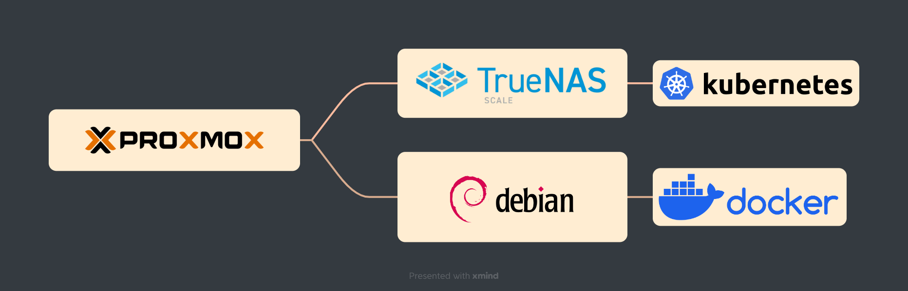
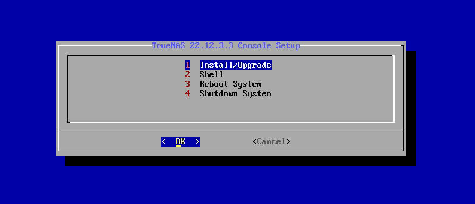
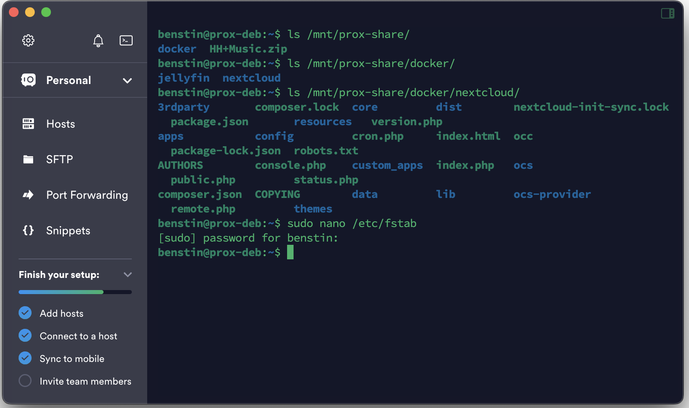
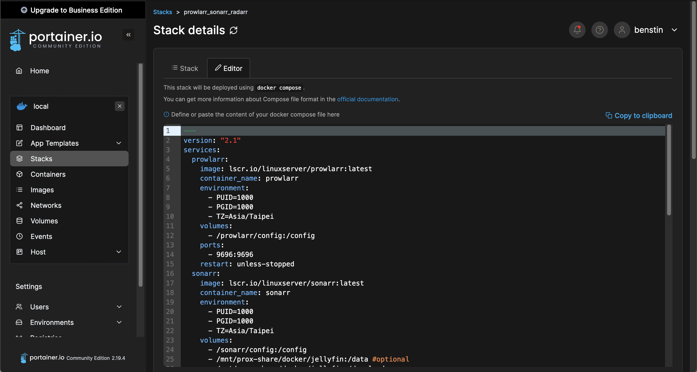
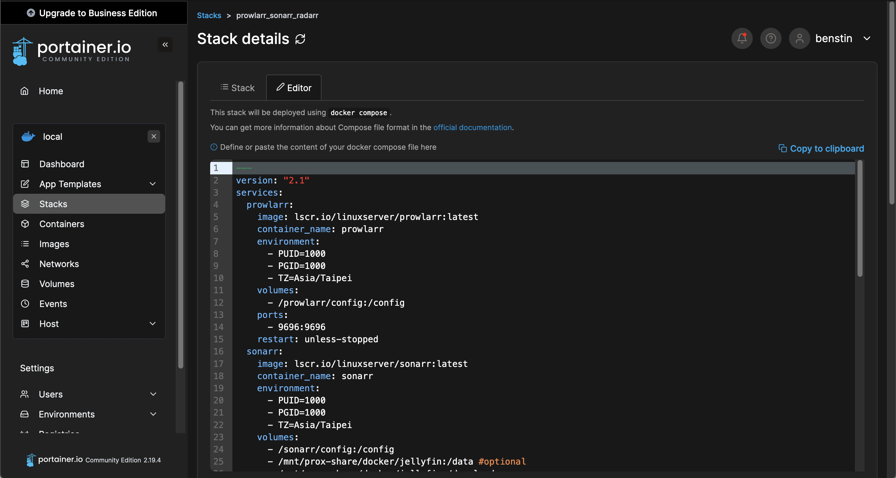

安裝系統
系統選擇
經過多次比較，最適合我同時安裝NAS及架設虛擬機的系統為「Proxmox」或「Unraid」或「TrueNas」。以下為三者的比較：
考慮到我想要同時開多個虛擬機並安裝Docker容器，最後選擇「Proxmox」作為這台機器的作業系統
系統內再安裝TrueNas Scale作為儲存管理的平台；Debian虛擬機安裝Portainer(Docker管理套件)

Proxmox
版本：Proxmox Virtual Environment 8.1.3
Proxmox是基於Linux Debian架構開發的系統，支援 KVM (虛擬機)、LXC (容器) 兩種虛擬化技術，在儲存方面則支援 ZFS、Ceph 等多種主流檔案格式與協定
因為我對於Linux系統的指令操作有些基本瞭解，基礎的上手難度不算太高，且Proxmox的社群、論壇十分活躍，若中途遇到任何問題，都能輕鬆在網路上找到相關的解決辦法


TrueNAS Scale
版本：TrueNAS-SCALE-23.10.0.1
TrueNAS Scale於2022年所發行，它的前身是TrueNAS Core（原FreeNAS），發行於2005年
舊版的TrueNAS Core是以FreeBSD為基礎，而TrueNAS Scale採用的則是Debian Linux作業系統，兩者檔案系統則皆採用OpenZFS。


Debian
版本：Debian 12.4.0
伺服器對於介面化系統（GUI）的需求比較低，所以本次僅安裝Command Line Interface
利用Termius作為SSH連線的工具程式（如圖）


Portainer
版本：Portainer Community Edition (CE)
Portainer是一個易用且輕量化的Docker管理介面，透過Web界面的操作，更方便對於Docker指令不熟悉的使用者更快進入Docker的世界
基於Docker的特性，於Portainer中可以直接更新映像檔的版本，使用相同的設定，重新佈署並取代原來的Container即可完成升級，使用最新版本的功能
 
